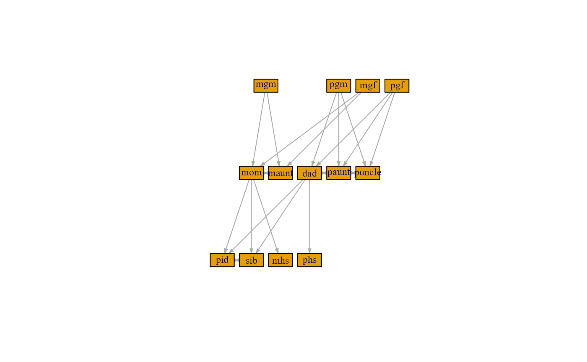

vignettes/FromTrioToFamilies.Rmd
FromTrioToFamilies.RmdIn this document, we will present how we can go from trio information
to full families that can be used to calculate kinship matrices. By trio
information, we specifically mean knowing the id of the child and the id
of the child’s mother and father. Kinship matrices are essential when
estimating the liabilities with the estimate_liability()
function of the package. This addition help with the process of
identifying related individuals and subsequent construction of the
kinship matrix.
The trio information can be used to create extended families manually by first identifying parents, grandparents, great-grandparents, etc.. From there, siblings, aunts and uncles, cousins, etc.. can also be identified. However, this is a tedious process and it is easy to miss family members. We have developed a function that can find all family member that are related of degree \(n\) or closer that does not rely on the tedious process of identifying each family role manually.
Below is an example data set of a family. It contains half-siblings, half-aunts and -uncles, as well as cousins and individuals that have married into the family. An example is mgm meaning maternal grandmother, hspaunt meaning paternal half-aunt, or hsmuncleW meaning maternal half-uncle’s wife.
family = tribble(
~id, ~momcol, ~dadcol,
"pid", "mom", "dad",
"sib", "mom", "dad",
"mhs", "mom", "dad2",
"phs", "mom2", "dad",
"mom", "mgm", "mgf",
"dad", "pgm", "pgf",
"dad2", "pgm2", "pgf2",
"paunt", "pgm", "pgf",
"pacousin", "paunt", "pauntH",
"hspaunt", "pgm", "newpgf",
"hspacousin", "hspaunt", "hspauntH",
"puncle", "pgm", "pgf",
"pucousin", "puncleW", "puncle",
"maunt", "mgm", "mgf",
"macousin", "maunt", "mauntH",
"hsmuncle", "newmgm", "mgf",
"hsmucousin", "hsmuncleW", "hsmuncle"
)
thrs = tibble(
id = family %>% select(1:3) %>% unlist() %>% unique(),
lower = sample(c(-Inf, 2), size = length(id), replace = TRUE),
upper = sample(c(2, Inf), size = length(id), replace = TRUE))The object family is meant to represent the trio
information that can be found in registers. It is possible to have
multiple families in the same input data or single individuals with no
family links.
graph = prepare_graph(.tbl = family,
thresholds = thrs,
fcol = "dadcol",
mcol = "momcol",
icol = "id")
graph## IGRAPH 8439f2b DN-- 31 44 --
## + attr: name (v/c), lower (v/n), upper (v/n)
## + edges from 8439f2b (vertex names):
## [1] dad ->pid mom ->pid dad ->sib
## [4] mom ->sib dad2 ->mhs mom ->mhs
## [7] dad ->phs mom2 ->phs mgf ->mom
## [10] mgm ->mom pgf ->dad pgm ->dad
## [13] pgf2 ->dad2 pgm2 ->dad2 pgf ->paunt
## [16] pgm ->paunt pauntH ->pacousin paunt ->pacousin
## [19] newpgf ->hspaunt pgm ->hspaunt hspauntH->hspacousin
## [22] hspaunt ->hspacousin pgf ->puncle pgm ->puncle
## + ... omitted several edgesThe object graph is a directed graph constructed from
the trio information in family and is build using the
igraph package. The direction in the graph is
from parent to offspring.
We can construct a kinship matrix from all family members present in
family, or we can consider only the family members that are
of degree \(n\). We can identify the
family members of degree \(2\) like
this:
# make_ego_graph returns list, even for node input of length 1
fam_graph = make_ego_graph(graph = graph,
order = 2,
nodes = "pid")[[1]]
plot(fam_graph, layout = layout_as_tree,
vertex.size = 27.5,
vertex.shape = "rectangle",
vertex.label.cex = .75,
edge.arrow.size = .3)
In particular, individuals such as paternal uncle’s child (i.e a cousin, coded as pucousin above) is not present with this relatedness cut-off as such family members are of degree \(3\).
Finally, the kinship matrix can be calculated with
get_kinship() (output made nicer with round) in the
following way:
# the kinship matrix is multiplied by 100 and rounded for illustrative purposes!
round(get_kinship(fam_graph, h2 = 1, index_id = "pid", add_ind = FALSE) * 100, 2)## pid sib mhs phs mom dad paunt puncle maunt mgm pgm mgf pgf
## pid 100 50 25 25 50 50 25 25 25 25 25 25 25
## sib 50 100 25 25 50 50 25 25 25 25 25 25 25
## mhs 25 25 100 0 50 0 0 0 25 25 0 25 0
## phs 25 25 0 100 0 50 25 25 0 0 25 0 25
## mom 50 50 50 0 100 0 0 0 50 50 0 50 0
## dad 50 50 0 50 0 100 50 50 0 0 50 0 50
## paunt 25 25 0 25 0 50 100 50 0 0 50 0 50
## puncle 25 25 0 25 0 50 50 100 0 0 50 0 50
## maunt 25 25 25 0 50 0 0 0 100 50 0 50 0
## mgm 25 25 25 0 50 0 0 0 50 100 0 0 0
## pgm 25 25 0 25 0 50 50 50 0 0 100 0 0
## mgf 25 25 25 0 50 0 0 0 50 0 0 100 0
## pgf 25 25 0 25 0 50 50 50 0 0 0 0 100